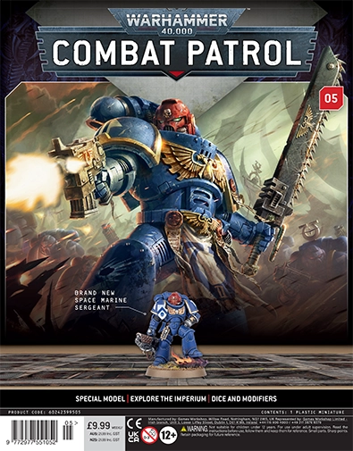

Combat Patrol Magazine 5 - Primaris Infernus Sergeant
Infernus Sergeant
The Space Marine Infernus Sergeant is an exclusive miniature that leads squads of Primaris Space Marines specialized in close-ranged fire support. Equipped with the devastating Pyreblaster, these Marines purge enemy forces with incandescent firestorms, proving exceptionally lethal against xenos swarms and entrenched infantry.
As a veteran leader, the Infernus Sergeant directs the fury of their squad to maximize the impact of their promethium-fueled weaponry. This unique model from Combat Patrol Issue 5 offers an option to be assembled with a helmeted or bare head, and leads from the front in characteristic,
Build Instructions
The instructions can be found here for the Infernus Sergeant.